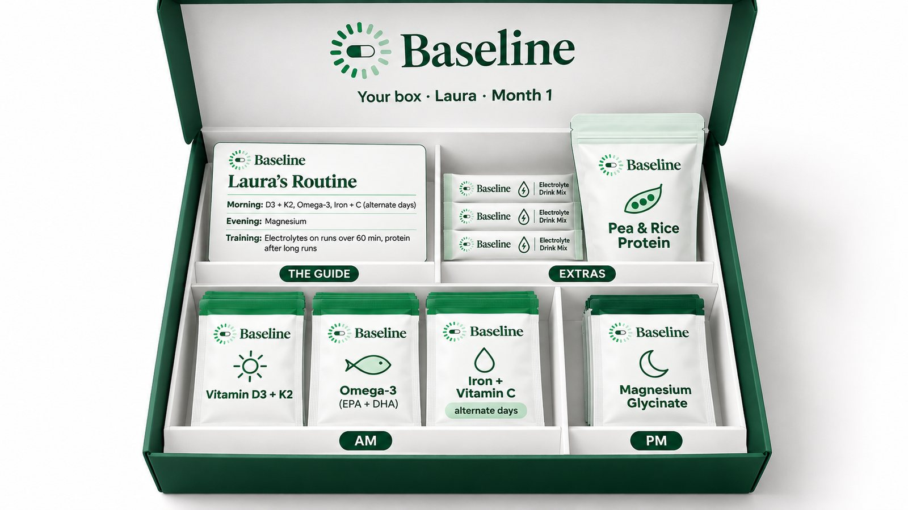

Billions affected
47.9% of people worldwide are low in vitamin D, and 65% do not get enough iron from food. 78% of US adults and 55% of European consumers take supplements. In our own survey, 15 of 16 did.
ProvenWe post you a free at-home blood test kit. Your monthly supplement box is then built from your results, your health history and your goals, and re-tested every 6 months so you can see what changed.
The test kit and postage both ways are free, with nothing to pay at checkout. When your results are ready we email you, and you can unlock them for €49.
Only 1 in 16 people in our survey chose their supplements from a blood test. Are you sure you need what you take?
Takes about a minute. We'll tell you which plan fits and what your blood test should look at first.
Pick one. You can change it later.
Be honest. Afternoon dips are one of the most common signs of low iron or vitamin D.
Helps us decide whether extras like protein, creatine or electrolytes make sense.
Vitamins, minerals, omega-3, protein, creatine and herbal products all count.
There is no wrong answer. Most people feel quite sure.
Any blood test counts, even one from your doctor.
Every plan is built from your blood test and reviewed by a dietitian.
We asked supplement users what frustrates them most. The top three answers, and how Baseline fixes each one:
A finger-prick blood test at home, analysed by an accredited lab. Real values, not questionnaire guesses.
A plain-language report explains every marker: what it means, whether it is low, and what we are doing about it. 1 in 3 people we surveyed never saw or understood their last blood test.
Your stack is built from your results, your diagnoses and medication, and the goal you choose. It arrives in morning and evening sachets, so there is nothing to remember.
Every 6 months we test again and adjust your box. You see your markers move, and stop paying for what you no longer need.
Tell us your goal, diagnoses and medication. Your free test kit arrives by post.
A few drops of blood from a fingertip onto the card. Send it back in the prepaid envelope.
Unlock your lab results with a plain-language report that explains every marker, then get your first monthly box built from them.
We measure again, show you what changed and re-formulate your box.

Prefer a clinic? Book a standard venous draw at a partner clinic instead of the finger-prick kit.
Training for muscle, endurance or a race. Protein, creatine and electrolytes, matched to your blood test and your goal.
Tired in the afternoon, indoors all day, unsure which of their supplements matter.
Coeliac disease, hypothyroidism, heavy periods or a vegan diet: conditions that change nutrient levels.
Adults over 50 who want to track bone, heart and brain-related markers over time.
Every Baseline box is made of up to three layers. What goes into each layer depends on your test results, your health profile and your goal, so no two boxes are the same.
Vitamins, minerals and fatty acids your blood test shows you are short of, in the right form and dose.
Nutrients matched to focus, sleep, weight, gut or healthy-ageing goals, checked against your medication.
Not essential for health, but useful for your goal: protein, creatine, electrolytes, collagen and more.
Your box is designed after your results. The kit is free.
Every plan starts with a free test kit. You pay €49 once to unlock your lab results and report, then choose your box.
Fix what is low and work towards your goal.
Stay healthy and reach your goal, with every extra that helps.
Examples of what our dietitians can choose from. Each one is only added when your results, health profile or goal call for it.
Forms and doses are chosen per person and kept within official safe upper limits. Health claims follow the rules of each market.
Laura is our user persona. Her results below are illustrative values, used to show how the box at the top of this page was designed.
| Marker | Result | Reference | Status |
|---|---|---|---|
| Vitamin D (25-OH) | 38 nmol/L | 50 nmol/L or more is adequate | Low |
| Ferritin (iron stores) | 14 µg/L | Below 15 µg/L indicates iron deficiency (WHO) | Low |
| Haemoglobin | 12.3 g/dL | 12.0 g/dL or more for women | Low end |
| Omega-3 index | 4.3% | 8% or more is the target range | Low |
| Magnesium (serum) | 0.77 mmol/L | 0.75 to 0.95 mmol/L | Low end |
| Vitamin B12 | 410 pmol/L | Above 150 pmol/L | In range |
| Folate | 18 nmol/L | Above 10 nmol/L | In range |
| Zinc | 13 µmol/L | 10.7 to 18 µmol/L | In range |
What it means: Laura's tiredness fits low iron stores and low vitamin D. Her B12, folate and zinc are fine, so she does not need them, even though her old multivitamin contained all three.
Ferritin of 14 µg/L means her iron stores are empty. Heavy periods and little red meat explain why.
EvidenceIn a randomised trial of menstruating women with low ferritin but no anaemia, iron supplements reduced fatigue more than placebo. Taking iron on alternate days instead of daily improved how much was absorbed. Vitamin C increases iron absorption.
Vaucher et al., CMAJ, 2012 · Stoffel et al., Lancet Haematology, 202038 nmol/L is below the 50 nmol/L considered adequate. She works indoors and her multivitamin only gave her 5 µg.
EvidenceLow vitamin D is common worldwide: 47.9% of people are below 50 nmol/L. The dose stays at half the EFSA tolerable upper limit of 100 µg a day for adults.
Cui et al., Frontiers in Nutrition, 2023 · EFSA Scientific Opinion on the tolerable upper intake level of vitamin D, 2023Her omega-3 index is 4.3%, well under the 8% target. She rarely eats oily fish.
EvidenceThe omega-3 index measures EPA and DHA in red blood cells; 8% or more is the proposed target range. Supplementing EPA and DHA raises the index, and we will re-measure it at her 6-month retest.
Harris and von Schacky, Preventive Medicine, 2004Her magnesium is at the low end of normal, and she is increasing her training load. She also wants better sleep before long runs.
EvidenceMagnesium contributes to a reduction of tiredness and fatigue (an EU-authorised health claim). 200 mg stays under the EFSA upper limit of 250 mg a day for supplemental magnesium.
EU Register of authorised health claims · EFSA tolerable upper intake levelsHer Sunday long runs reach 100 minutes as the race gets closer, and she runs in warm weather from spring.
EvidenceSports nutrition guidelines recommend replacing fluid and sodium during prolonged exercise, especially for long sessions and heavy sweaters.
Thomas, Erdman and Burke, ACSM / Academy of Nutrition and Dietetics / Dietitians of Canada joint position, 2016She eats little meat and is training for an endurance race, so her protein needs go up.
EvidenceThe same joint position recommends 1.2 to 2.0 g of protein per kg of body weight a day for athletes, spread across the day and after training.
Thomas, Erdman and Burke, 2016She has no sign of deficiency, and high-dose biotin can interfere with some lab tests, including thyroid and heart tests (US FDA safety communication). It could also distort her own results.
It added B12, folate and zinc she does not need, and too little vitamin D and no iron for what she does need.
No marker or goal calls for it, and some EU countries, such as Denmark, have restricted it on safety grounds.
Its strongest evidence is for short, high-intensity and strength work. Laura's goal is endurance, so it is not worth the cost for her right now.
Laura is a fictional persona and her values are illustrative. Baseline does not diagnose or treat disease; every stack is reviewed by a registered dietitian or pharmacist, and results far outside the normal range are referred to a doctor.
A questionnaire can only estimate what you might be missing. A blood test measures it. That means we can leave out products you do not need, and show you whether the ones you take are working.
Most people are. In our survey, 12 of 16 supplement users felt sure they take what their body needs, but only 1 had chosen from a blood test. A test shows whether you are right, what you can stop paying for, and what is actually low.
A routine check-up panel may not include markers such as vitamin D, B12, ferritin or the omega-3 index, and results rarely come with a plan. In our survey, 9 of the 14 people who had had a blood test said it never led them to start or stop a supplement, and 1 in 3 never saw or understood their results. We explain every marker in plain language and build your box from it.
It is a quick prick from a small lancet, like the ones used for blood sugar checks. If you would rather not do it yourself, you can book a venous draw at a partner clinic.
You tell us your diagnoses, medication and allergies before we build your stack, and we screen for known interactions. Baseline does not diagnose or treat disease and does not replace your doctor. If your results are far outside the normal range, we will advise you to see a doctor.
Yes. The kit and its prepaid return envelope cost nothing. You pay €49 when the lab has analysed your sample and you unlock your results and report. On Restore and Ascend, your 6-month retest results are included.
Ascend adds products that are not essential for health but help you reach your goal: for example protein powder, creatine and electrolytes for training, collagen for joints and skin, or sleep support. We choose them from your goal and results, so you only get what fits you.
Baseline is built to ship worldwide, working with accredited partner labs in each region so your sample is analysed close to home.
Your box comes as daily sachets marked morning and evening, so each day is one sachet with breakfast and, if your plan needs it, one in the evening. No bottles to sort.
Yes. Pause or cancel anytime from your account. Your first box is covered by a 30-day money-back guarantee, on top of any legal right of withdrawal in your country (14 days in the EU).
Your results and health history are sensitive health data. They are encrypted, never sold, and used only to build and adjust your plan, in line with GDPR and the health-data rules where you live. You can download or delete them at any time.
Baseline replaces guessing with a blood test, so people take only what their body needs and can see it working. This page is for the T-Spark mentors and jury: the problem, the evidence, how we serve UN Sustainable Development Goal 3, and the business behind it.
Micronutrient deficiencies, sometimes called hidden hunger, rarely show up until they cause tiredness, poor focus or illness. At the same time, most supplements are chosen from social media and store shelves.
Most people take supplements. Few have a test that says they need them.
Pew Research Center, 2026 · AESGP/EPPA, 2025 (6,000 people) · Harris Poll for the AOA, 2019Global supplement spending, in billions of US dollars.
Grand View Research: $209.5B in 2025, forecast $431.7B in 2033. Years in between drawn at the same growth rate.Laura is our user persona, built from the problem data and checked in interviews. Her story follows the 7 lines from the session.
See the box we built for Laura →The session asks for evidence on at least 3 of the 6 TAP criteria. We have it for 5, and we are open about the one where we are weak.
47.9% of people worldwide are low in vitamin D, and 65% do not get enough iron from food. 78% of US adults and 55% of European consumers take supplements. In our own survey, 15 of 16 did.
Proven62% of European users take supplements every day and restock about once a month (AESGP/EPPA, 2025).
ProvenEU Regulation 1924/2006 limits the health claims sellers can make, which favours a service built on each customer's measured data. It does not force anyone to test.
WeakSpent worldwide, mostly by guesswork. Supplements are also linked to about 23,000 US emergency room visits a year (Geller et al., 2015).
ProvenSupplements are forecast to grow 9.5% a year to 2033, and personalised nutrition 16% a year in Europe to 2030. Use in Spain rose from 42% to 58% of adults in four years.
Proven17.7% of Europeans are severely low in vitamin D from October to March, against 8.3% in summer (Cashman et al., 2016). It hurts today, every year.
ProvenUsers × frequency × economic intensity, for the EU. Move the sliders to test other assumptions.
An online survey run on 18 and 19 November 2026, alongside our interviews. Mostly 18 to 24 year olds in Spain, so it shows direction, not the whole market.
Van Westendorp price questions about a monthly box built from your blood test. Most answers fell in these ranges.
Result: Restore at €49 is well placed, so our plans now start there. Ascend was €89, above the "too expensive" limit for at least half, so we lowered it to €79 and will test it with 25 to 45 year olds next.
SDG 3 is the reason Baseline exists. Deficiencies are common, measurable and cheap to correct, yet most people only see a blood test when they are already ill. We bring routine measurement to people at home and turn every result into a plan.
Reduce premature deaths from non-communicable diseases and promote mental health and well-being.
What Baseline does: finds low vitamin D, iron, B12 and omega-3 early, before they turn into fatigue, low mood or poor recovery, and tracks HbA1c and lipids for customers with weight goals.
Universal health coverage, including access to quality essential health-care services.
What Baseline does: an accredited lab test posted to your door, with the kit free and results for €49. No clinic visit, no waiting list, in any country where we have a partner lab.
SDG 2 includes ending all forms of malnutrition, which covers micronutrient deficiency.
What Baseline does: corrects the specific deficiencies each person has, at doses within official safe limits, and removes what they do not need.
Free finger-prick kit, analysed by an ISO 15189-accredited lab.
Every marker explained in plain language. Results far out of range are referred to a doctor.
Only what the blood shows is low, screened against diagnoses and medication.
Every 6 months the panel is repeated, so people see their markers change.
Anonymised before-and-after data, with consent, improves the rules for everyone.
These are the metrics we will report once the first customers are retested. We will not publish impact claims before we have the data.
Adults who take supplements spend money every month without knowing what their body lacks. We want to help them take only what their blood shows they need, adjusted to their health conditions and goals, and to see their markers improve.
In: at-home blood test, results report, personalised monthly box in three tiers, health and goal profile, 6-month retest, subscription website.
Out: diagnosing or treating disease, prescription medicines, our own lab or factory, markets without an accredited partner lab.
Primary: adults aged 25 to 45 in cities worldwide who already buy supplements and have a health or fitness goal, like Laura.
Secondary: people with a condition that affects nutrient levels (coeliac disease, hypothyroidism, vegan diets, heavy periods), amateur athletes, and adults over 50 focused on healthy ageing.
A recurring supplement subscription that starts with a blood test. Every box is built from your results, your diagnoses and medication, and your goal, and it changes when your blood does.
Take the 2-minute quiz and we post a finger-prick kit to you.
A few drops of blood, posted back free to an accredited lab.
Unlock your results for €49. Your stack is built and posted.
See what changed. Your box is re-formulated to match.
Based on published competitor prices and cost benchmarks. Lab, sachet and churn figures still need confirming with suppliers and pilot customers.
These are our targets. We will publish real results once the first retests are in.
Good Health and Well-Being: prevention through routine measurement instead of guesswork.
Join the waitlist and we will send your free test kit as soon as we ship to your country.
After checkout you will add your diagnoses, medication and allergies in your secure account, before your stack is built.
You paid €0. Your kit ships within 2 working days.
Create a password now, so you can open your results the moment our email arrives.